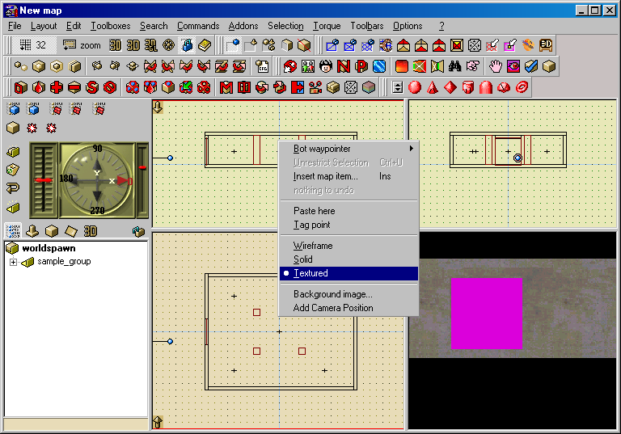

Torque
Updated 08 Oct 2008
- QuArK Information Base
- 1. Introduction to QuArK
- 1.3. Configuration of QuArK
- 1.3.2. Games
- 1.3.2.1. Specific games
|
|
Torque
Updated 08 Oct 2008
|
Upper levels: - QuArK Information Base - 1. Introduction to QuArK - 1.3. Configuration of QuArK - 1.3.2. Games - 1.3.2.1. Specific games |
|
1.3.2.1.7. Torque |
[ - - ] |
|
Index |
|
Configuration |
cdunde - 08 Oct 2008 | [ Top ] |
|
In this short tutorial I will be showing you how to quickly setup Quark to compile maps for the Torque game engine. To create maps for Torque you must download a version of its build tool, the map2dif_DEBUG.exe file. There are a number of different versions available on the Internet, but I recommend using the 0.900r-beta version.
Part 2 – Compiling When you are ready to compile your map and make the dif file, simply select the "Torque" main menu item and then one of the build functions from its sub-menu. Using either the "Export220Map/Build High Detail DIF" or the " "...Low Detail DIF" will cause QuArK to create the tmpQuArK folder in your main Torque directory. QuArK will also create two sub-folders as well, the maps and textures folders within the tmpQuArK folder. The maps folder will contain the map and dif files and the textures folder will contain all of the textures that are currently used in your map. Usually the textures and the dif file need to be placed in the same folder when you go to load the dif file into Torque for placement in its editor.
|
|
Custom Textures |
cdunde - 11 Mar 2008 | [ Top ] |
| |
|  |
|
Once you have accomplished this last step you can then select the 3D Textured view, as shown in the screen shot above, by holding your mouse cursor over the 3D view, clicking your RMB and selecting the Textured item on the popup menu. QuArK creates a default building structure when you start a "New Map" from its Explorer's Games menu. But you may need to replace its default textures with ones that you now have in the Texture Browser to be able to see it in the 3D Textured view.
You can also now compile your map by selecting one of the functions from the main Torque menu as covered in Part 2 of the Configuration section above. Just a few more needed points about textures for Torque. 1) Most of the time they need to be of equal height and width and of a power of 2 (i.e. 16x16, 32x32, 64x128, 128x128, 128x256, 512x512, etc.). If not, then you will only see your map structures as white objects in the Torque Editor when you apply lighting to display the items. 2) It is necessary that the .dif and its textures are placed in the same location, or folder, in order to display the object with its texture. So, as covered above, these files are located in their respective map and textures folders of the tmpQuArK folder in your Torque directory and need to be moved to the proper location for their use in the Torque Editor. See your Torque documentation for that exact handling. |
|
Misc. Info. |
cdunde - 06 Aug 2007 | [ Top ] |
|
|
Copyright (c) 2009, GNU General Public License by The QuArK (Quake Army Knife) Community - http://quark.sourceforge.net/ |
[ - Top - ] |